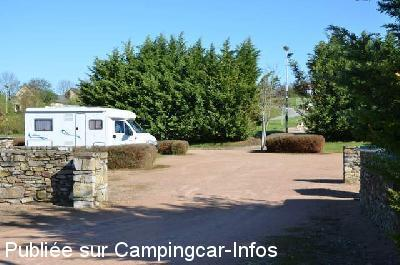
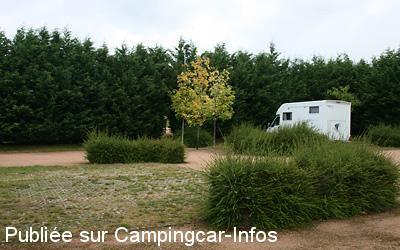

APN = Parking toléré jour/nuit de :
SAINT RÉMY DE BLOT
(N° 491)
Accès/adresse :
Place du Bourg
63440 SAINT RÉMY DE BLOT
63440 SAINT RÉMY DE BLOT
Latitude : (Nord) 46.07707° Décimaux ou 46° 4′ 37′′
Longitude : (Est) 2.93118° Décimaux ou 2° 55′ 52′′
Tarif : Gratuit
Services :
Commerces
Autres informations :
Ouvert toute l'année
6 emplacements
Tel : +33(0)473 979 773

Le 06/08/2012 par G. Degenne

Le 23/10/2010 par Cineloge
de
Noelly
le 17/05/2013 :
nous avons passés une nuit sur cette aire super calme!
tres bien entretenue WC a coté .
nous avons trouvés de l'eau pas loin vers le chateau a visiter ça vaut le détour une vue imprenable sur les gorges de la sioule et le pique nique.....merci a la commune !
nous avons passés une nuit sur cette aire super calme!
tres bien entretenue WC a coté .
nous avons trouvés de l'eau pas loin vers le chateau a visiter ça vaut le détour une vue imprenable sur les gorges de la sioule et le pique nique.....merci a la commune !
de
moreno
le 07/10/2012 :
§
De passage au mois de juin 2012, rectificatif sur cette
aire, il n'y a plus de borne de service, ce n'est juste
qu'un parking. Dommage, car le site est agréable, s'il
n'y avait pas de jeunes abrutis (très courageux) qui ne viennent perturber
votre sommeil à coups de klaxon. Grace à un gros orage
ils ne sont plus revenus
§
De passage au mois de juin 2012, rectificatif sur cette
aire, il n'y a plus de borne de service, ce n'est juste
qu'un parking. Dommage, car le site est agréable, s'il
n'y avait pas de jeunes abrutis (très courageux) qui ne viennent perturber
votre sommeil à coups de klaxon. Grace à un gros orage
ils ne sont plus revenus